你知道的越多，你不知道的越多
点赞再看，养成习惯
GitHub上已经开源https://github.com/Java...，有面试点思维导图，欢迎Star和完善
这一期不算《吊打面试官》系列的，所有没前言我直接开始。
本来应该是没有这期的，看过我上期的小伙伴应该是知道的嘛，双十一比较忙嘛，要值班又要去帮忙拍摄年会的视频素材，还得搞个程序员一天的Vlog，还要写BUG，超级忙的。
Redis的答案刚发，你怎么又发？这么高产？这么这么优秀！
其实这篇是我以前就写的，只是都没发出来过，而且作为暖男我就想着你们嘛，所以就从自己之前的文章里面水一篇给大家看一下，开始前我先回答点最近大家私聊问我的一些问题。
这个问题就算不问我也准备在某一期写出来的，因为Java3y的作者三歪哈，这个号大家在各个博客平台应该都或多或少看过，是他给的建议。
他是我基友兼同事上班的时候我们面对面坐的（昨晚在我这促膝长谈哈哈），他是一个应届生，但是他现在已经有200多篇原创文章了，知识的广度深度都挺好的。
反正就是跟我说了很多东西，我一听诶觉得这个人有点东西，然后有一天他说我这样的性格应该去写文章，肯定有很多人喜欢看，关注人多了，可能有点也会有点工资外的额外收入。
（实话实说，我也不骗你们，像我工资这么高的人 ! 跟我谈钱？真香）。
不过现实总是这样残酷，至于现在收入多少嘛，我觉得我刚开始写，我们还是不提这个好吧，我怕我把自己写哭了o(╥﹏╥)o！
是的给个图片自己感受哈哈。（左三歪，右敖丙）
说实话挺爽的，很多人才喜欢看嘛，很多人私信鼓励我写下去，还有就是因为以前跟很多博主啥的，信息都是单方面的输入的关系，就都是别人写了我看。现在自己也输出了，也有自己喜欢的博主看了，还点赞评论加关注了，我觉得就很开心。
特别是CSDN的大佬 ：梦想橡皮檫 掘金的 ：SnailClimb（ JavaGuide）
JavaGuide跟Java3y一样都是应届生，我都是看着他们的文章长大的，这差距诶。
（不过私下确认了一下好像我和他还有三歪都是96年的哈哈）
然后有时候消息可能回不及时，但是我能回的我其实都第一时间回了，但是平时工作嘛，基本上都是晚上回家，中午吃完饭啥的看消息，但是都是这样的↓↓↓
我有点慌（其实很开心，谢谢各位的认可）！
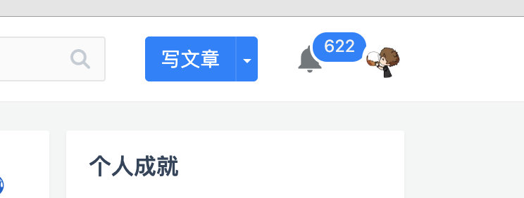
我自己之前也面过大大小小的互联网公司，不乏阿里系腾讯系的公司，失败过，成功过，哭过，爱过~~~~，我知道面试的哪些点比较重要或者怎么组织话语比较重要，其实自己有在自己的本地写过一些东西。
但是都没发表过，而且本地很多好像也是我以前复制进去的，我都不知道哪些是自己写的哪些是复制的，肯定不能直接发的，所以以后应该都是自己写自己的内容，以后就承蒙各位关注了！
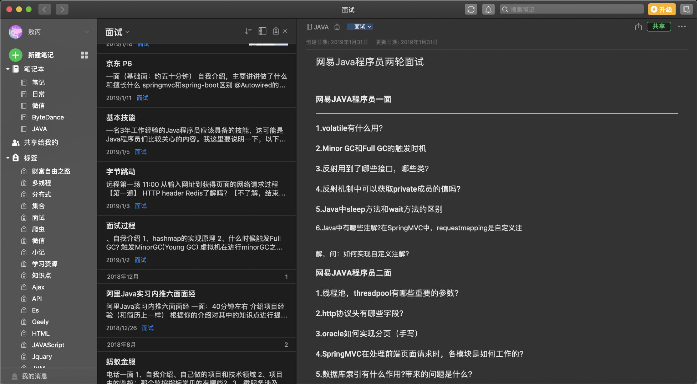
一般都是周末或者下班后，孤寡老人嘛在家就坐沙发上发呆，然后写点东西，喝点闷开水，年纪大了早上也睡不着，早起也会在那写到快上班去上班。
但凡有个女朋友都不至于这样啊！！！
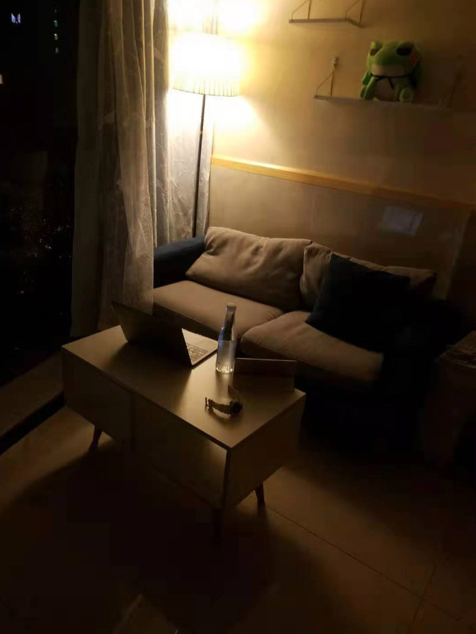
捞一下：前几期吊打系列我们提到了Redis的知识，还没看的小伙伴可以回顾一下
这期不算面试的知识点，来只看面试的小伙伴可以直接跳文末的面试技巧。
我们公司在1024当天有个活动↓
MOGU创意代码大赛
参赛要求
1.参赛作品主题鲜明，创意新颖，内容健康，适合观赏，以生活为主题；
2.充分发挥想象力和创造力，力求以独特的创意展现作品的趣味性和娱乐性。
我一看诶，我擦，这不是本渣我的强项嘛，用代码输出点啥，我第一时间就想到了用代码把一个完整的视频输出出来，我输出公司的广告不就跟公司就有强关联性了嘛。
奖项设置
一等奖 1名：Razer雷蛇电竞专用机械键盘
二等奖 2名：飞利浦机皇款电动牙刷
三等奖 3名：颈椎按摩器/电动理疗护颈仪
参与奖若干：国风超大电脑桌垫（哪吒闹海）
本渣我一看居然还有奖励，不过奖励不奖励的无所谓，我主要是喜欢写代码。
既然脑子有了想法那我也不多BB直接开搞。
我们都知道其实最早的动画片都是画家手动一张一张的画出来然后连起来播放，然后才成动画片的，那么原理我们也知道了，就直接开搞吧。
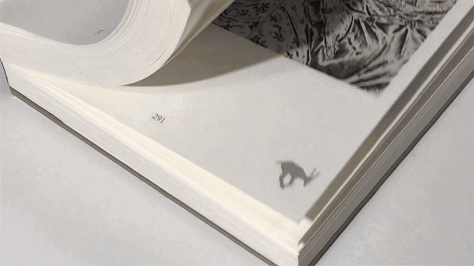
tip：这里有个注意点就是没必要一帧一帧的抽，因为肉眼最高的是60fps，要一帧一帧抽那太多了，我按照每10帧抽了，这样工作了少很多，但还是好多啊，不说了直接搞
也有批量抽帧工具，mac上我没找到，就麻烦朋友在Windows电脑抽了一下
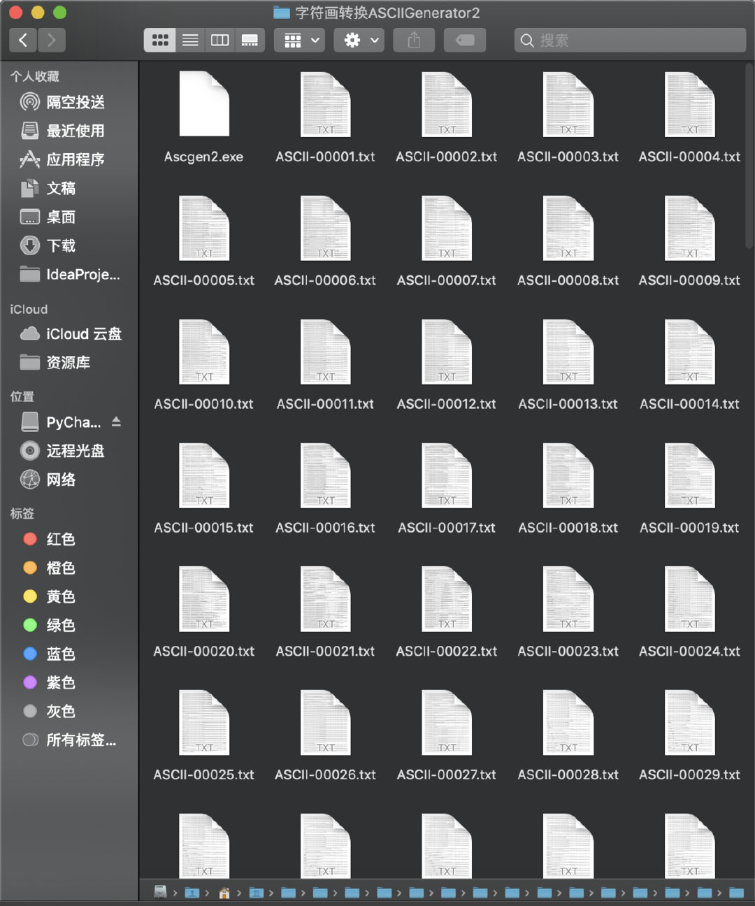
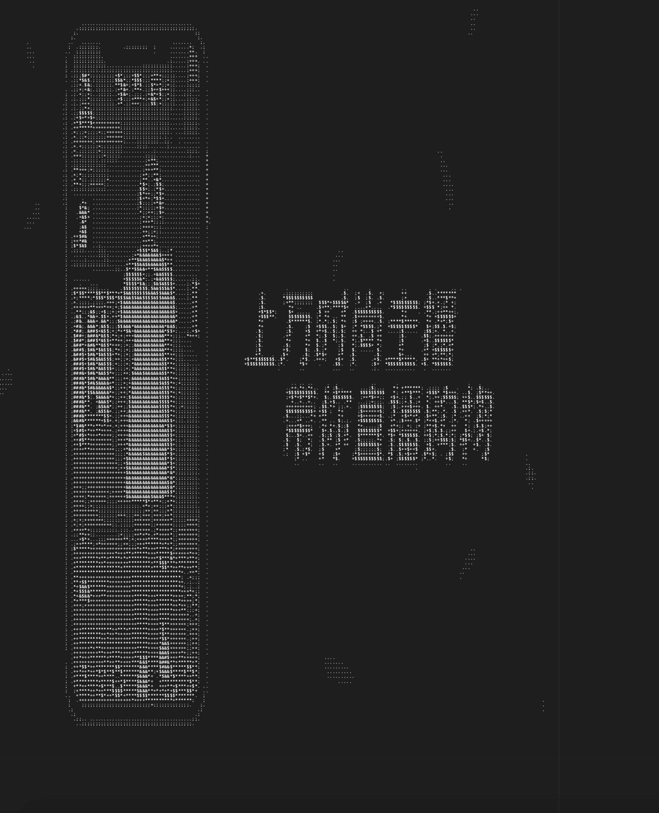
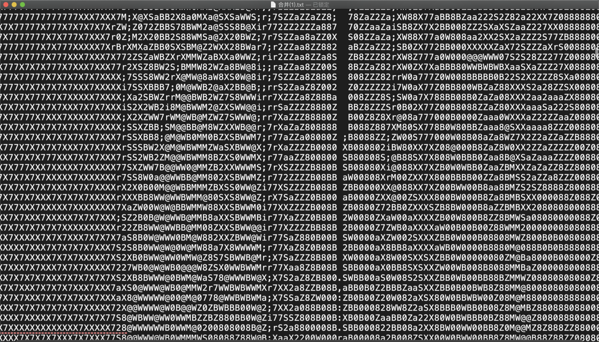
ps：这里有个坑，就是mac大部分的字体在txt文本中是不等宽的，就是说 i 和 o是不等宽的，你需要找到对应等宽的字体 我找了很久才找到，作为暖男，你不用找了我帮你找好了 ！
我们可以看一下不等宽的样子，就会发现每一行字数一样，但是长宽不一样。
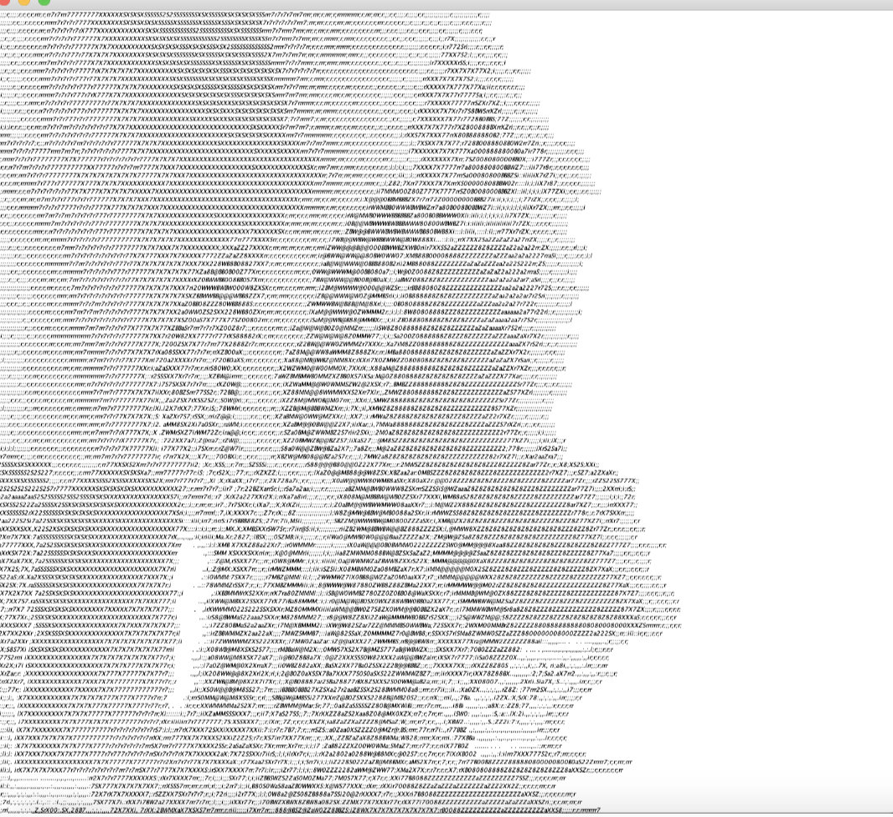
去txt里面找到字体设置一个一个试，
用代码去拉出本地所有的字体，循环出来看效果
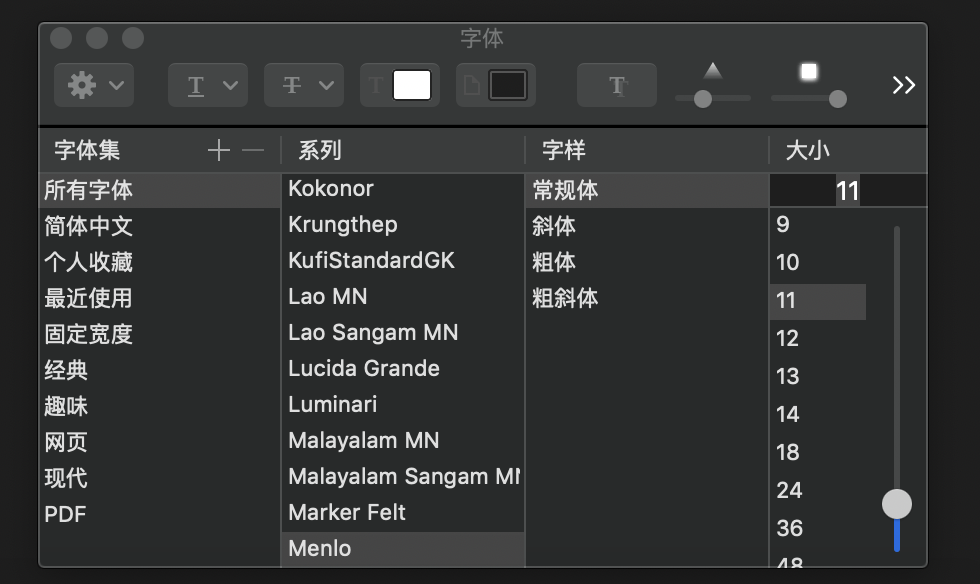
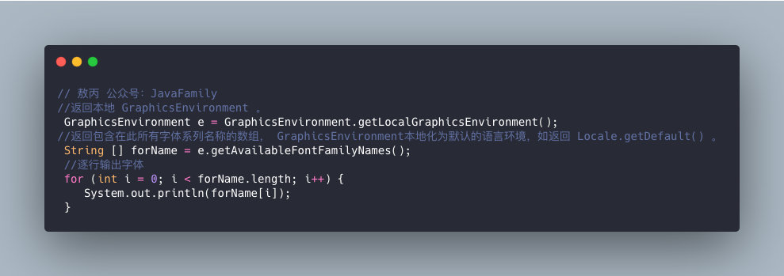
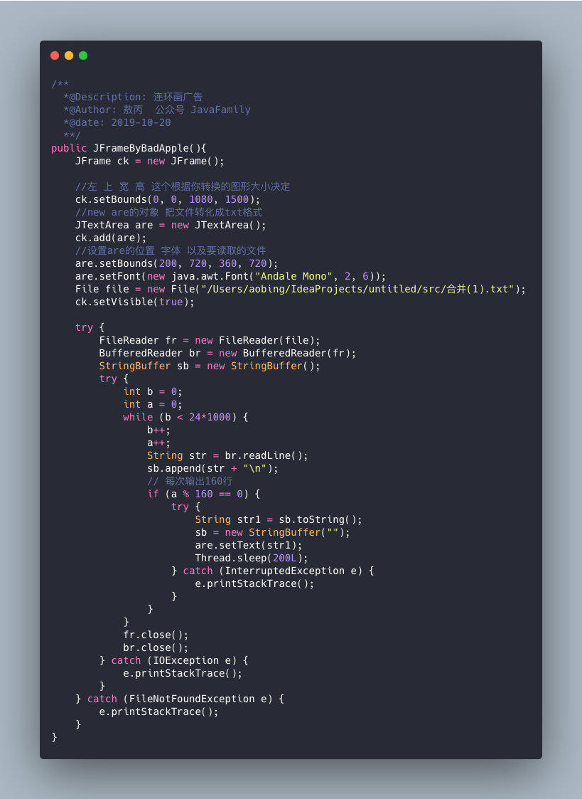
完整版太大了gif传上来展示不出，完整版可以看我公众号，就放个一两秒的demo。
像我这种天才型的选手，你们想都不用想，拿了第二o(╥﹏╥)o，下面是hr小姐姐发奖时候的照片，为啥没拍我领奖的照片，生气！
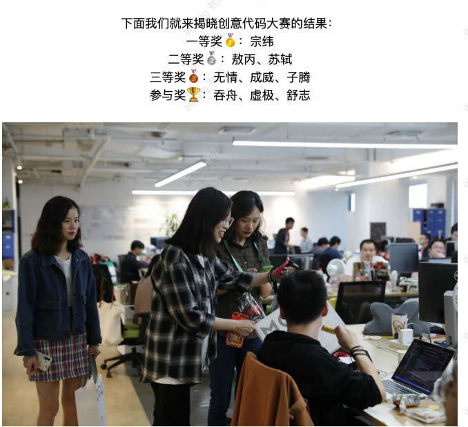
只能感叹对手太强了，太强了。
不过还是忍不住给自己的聪明才智点个赞！
暗示点赞，每次都看了不点赞，你们想白嫖我么？你们好坏喲，不过我喜欢
好了不逗比了，最后我来点干货吧，因为我发现好多读者都是应届生什么的，或者是明年就要出来实习的仔，那我给点我的建议：
准备自我介绍！！！
自我介绍，这个必须要准备，面试90%的套路都是“来你先做个自我介绍吧” ，一般自我介绍1-3分钟左右，时长看你自己的经验和经历。
作为在校生：
因为大家还没啥社会经验，我觉得你突出你的大学经历、个人成就奖项、证书、个人成绩等就好了。
要让面试官知道你是个人才，你没有白白荒废你的大学生活，我招你进来你是个靠谱的人，肯学肯沟通能吃苦耐劳等等，对了有实习经历的一定要突出出来，毕竟这是你和社会接轨的证明，
最后给个小技巧，大家可以把自我介绍写下来，然后说出来并且自己用手机录音听一下，联系到自己满意为止，我刚毕业就是这么做的，（每次听自己的声音都忍不住爱上自己）我印象笔记里的版本，我改掉了公司信息和学校信息，可以给你们个DEMO可以参考下，觉得不错记得点赞！！！
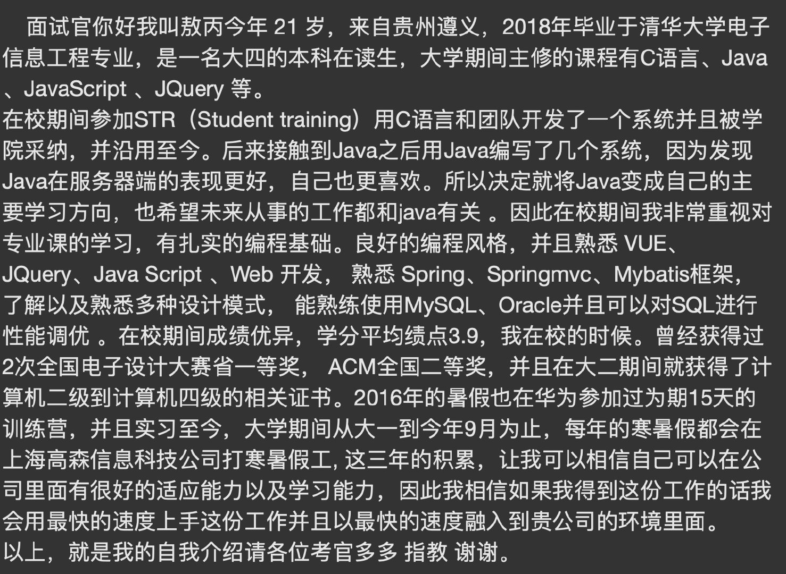
作为已经工作的仔：
我觉得大家，更要细心准备这1-3分钟的自我介绍。
因为这是这场面试的开始，也是面试官唯一能快速获取你经历信息的途径，多的就不说了，公司、工作的内容、擅长的技术栈，甚至是是否单身等等（有的加班严重的公司就是比较看重这个），我也准备了社招的面试Demo，你们加我公众号获取吧，算了不这么吸粉了，直接放吧（我还是心太软啊）！点赞！！！
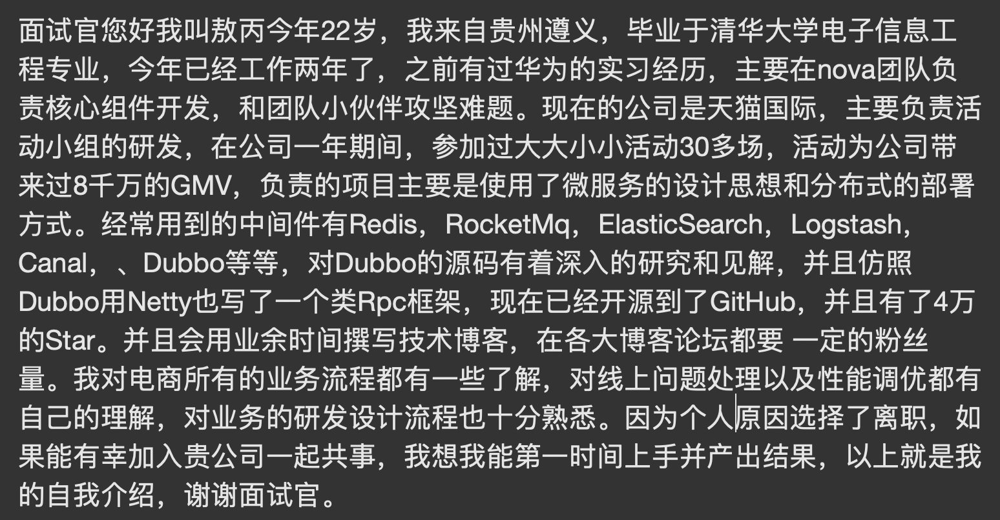
上面的学校公司都是我瞎吹的，可不能给我清华抹黑啊！
其实我这里都是比较简单的自我介绍了，真实大家的经历可能更丰富点，而且大家也可以多多润色一下，这只是自我介绍一个环节，后面在各个《吊打面试官》系列里面我都会提到一些小的贴士大家都注意下。
有啥疑问或者需要我给建议可以去GitHubhttps://github.com/AobingJava/JavaFamily或者我公众号都有我微信。
下期准备了从下面两个题材中选一个写，根据你们这个篇文章的点赞是基数还是偶数决定
好了各位，以上就是这篇文章的全部内容了，能看到这里的人呀，都是人才。
我后面会每周都更新几篇《吊打面试官》系列和互联网常用技术栈相关的文章。如果你有什么想知道的，也可以留言给我，我一有时间就会写出来，我们共同进步。
非常感谢人才们能看到这里，如果这个文章写得还不错，觉得「敖丙」我有点东西的话 求点赞👍 求关注❤️ 求分享👥 求留言💬 对暖男我来说 非常有用！！！
各位的支持和认可，就是我创作的最大动力，我们下篇文章见！
敖丙 | 文 【原创】【转载请联系本人】 如果本篇博客有任何错误，请麻烦指出来，不胜感激 ！
《吊打面试官》系列每周持续更新，可以关注我的公众号JavaFamily第一时间阅读和催更（公众号比博客早一到两天哟），GitHub上已经开源https://github.com/Java...，有面试点思维导图，欢迎Star和完善里面也有我个人微信有什么问题也可以直接滴滴我，我们一起进步。